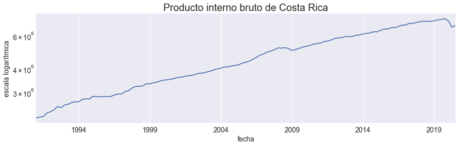
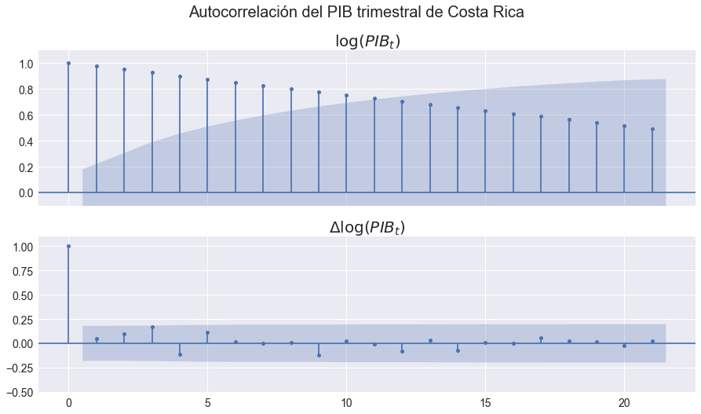
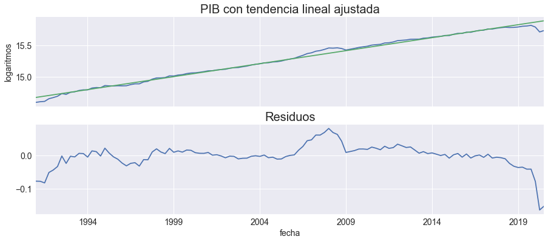
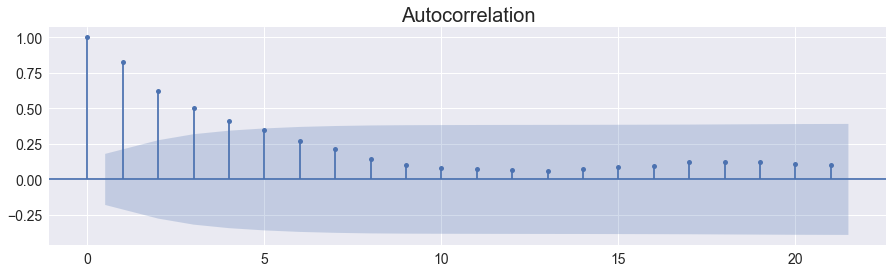

Pruebas de raíz unitaria para el PIB en Costa Rica
Contents
4.5. Pruebas de raíz unitaria para el PIB en Costa Rica¶
import numpy as np
import pandas as pd
import matplotlib.pyplot as plt
import statsmodels.formula.api as smf
import statsmodels.api as sm
from statsmodels.tsa.stattools import adfuller, kpss
plt.style.use('seaborn')
plt.rc('figure', figsize=(15,4))
plt.rc('axes', titlesize=20, labelsize=14)
plt.rc('legend', fontsize=14)
plt.rc('xtick', labelsize=14)
plt.rc('ytick', labelsize=14)
figpath = "../figures/"
Descargar los datos¶
import bccr
pib = bccr.SW(PIB=33783)
pib['lPIB'] = np.log(pib['PIB'])
temp = pib.copy()
temp.index = pib.index.to_series().astype(str)
temp.reset_index().to_stata('pib-costa-rica.dta')
del temp
Gráfico de la serie¶
fig, ax = plt.subplots()
pib['PIB'].plot(ax=ax, legend=False)
ax.set(yscale='log', title='Producto interno bruto de Costa Rica', ylabel='escala logarítmica')
fig.savefig(figpath + 'pib-costa-rica-I(1).pdf', bbox_inches='tight')

Correlograma del (logaritmo) del PIB y su primer diferencia¶
fig,axs = plt.subplots(2,1, figsize=[15,8], sharex=True)
sm.graphics.tsa.plot_acf(pib['lPIB'],ax=axs[0]);
axs[0].set(ylim=[-0.1,1.1], title='$\log(PIB_t)$')
sm.graphics.tsa.plot_acf(pib['lPIB'].diff().dropna(),ax=axs[1]);
axs[1].set(ylim=[-0.5,1.1], title='$\Delta\log(PIB_t)$')
fig.suptitle('Autocorrelación del PIB trimestral de Costa Rica', fontsize=20)
fig.savefig(figpath + 'pib-costa-rica-rho.pdf',bbox_inches='tight')

Ajustando una tendencia lineal¶
Estimando la tendencia y los residuos¶
pib['t'] = np.arange(pib.shape[0])
pib['tendencia'] = smf.ols('lPIB ~ t', pib).fit().fittedvalues
pib['residuos'] = pib['lPIB'] - pib['tendencia']
fig, axs = plt.subplots(2,1, figsize=[15,6], sharex=True)
pib[['lPIB','tendencia']].plot(ax=axs[0], legend=False)
axs[0].set(title='PIB con tendencia lineal ajustada', ylabel='logaritmos')
pib[['residuos']].plot(ax=axs[1], legend=False)
axs[1].set(title='Residuos')
fig.savefig(figpath + 'pib-tendencia-lineal.pdf', bbox_inches='tight')

Correlograma de los residuos¶
sm.graphics.tsa.plot_acf(pib['residuos']);

Pruebas de DickeyFuller¶
Implementando la prueba DF con regresión lineal¶
dy = pib['lPIB'].diff()[1:]
ly = pib['lPIB'].shift(1)[1:]
tt = np.arange(dy.size)
X = sm.add_constant(ly)
Z = np.c_[X,tt]
tnc = sm.OLS(dy,ly, hasconst=False).fit().tvalues[0]
tc = sm.OLS(dy, X, hasconst=True).fit().tvalues[1]
tct = sm.OLS(dy, Z, hasconst=True).fit().tvalues[1]
tnc, tc, tct
(7.591019301133945, -2.8373335086898184, -0.1961570690538992)
tbl = sm.OLS(dy, X, hasconst=True).fit().summary().tables[1]
with open(figpath + 'df-lpib-regresion.tex','w') as cuadro:
cuadro.write(tbl.as_latex_tabular())
Implementando el código para hacer las tablas¶
specs = ['nc', 'c', 'ct']
indice = ['sin constante', 'con constante', 'con constante y tendencia']
def DF(datos, spec):
res = adfuller(datos, maxlag=0,regression=spec)
resultado = {
'z':res[0],
'1%': res[4]['1%'],
'5%': res[4]['5%'],
'10%': res[4]['10%']}
return resultado
def ADF(datos, spec):
res = adfuller(datos, regression=spec, autolag='t-stat')
resultado = {
'z':res[0],
'1%': res[4]['1%'],
'5%': res[4]['5%'],
'10%': res[4]['10%'],
'p': res[2]}
return resultado
pruebas = {'df':DF, 'adf':ADF}
def tabla_dickey_fuller(serie, test, diff=0):
datos = pib[serie].diff(diff) if diff else pib[serie]
resultados = pd.DataFrame([pruebas[test](datos.dropna(), ss) for ss in specs], index=indice).round(3)
nombre = '_'.join([test,serie,str(diff)])
resultados.to_latex(figpath + nombre + '.tex')
return resultados
Pruebas para serie en nivel¶
tabla_dickey_fuller('lPIB','df')
| z | 1% | 5% | 10% | |
|---|---|---|---|---|
| sin constante | 7.591 | -2.585 | -1.943 | -1.615 |
| con constante | -2.837 | -3.487 | -2.886 | -2.580 |
| con constante y tendencia | -0.196 | -4.038 | -3.448 | -3.149 |
Pruebas para serie en primer diferencia¶
tabla_dickey_fuller('lPIB', 'df', diff=1)
| z | 1% | 5% | 10% | |
|---|---|---|---|---|
| sin constante | -7.289 | -2.585 | -1.944 | -1.615 |
| con constante | -10.191 | -3.488 | -2.887 | -2.580 |
| con constante y tendencia | -10.859 | -4.038 | -3.449 | -3.149 |
Serie de los residuos alrededor de tendencia¶
tabla_dickey_fuller('residuos', 'df', diff=0)
| z | 1% | 5% | 10% | |
|---|---|---|---|---|
| sin constante | -0.408 | -2.585 | -1.943 | -1.615 |
| con constante | -0.386 | -3.487 | -2.886 | -2.580 |
| con constante y tendencia | -0.196 | -4.038 | -3.448 | -3.149 |
Prueba aumentada de Dickey-Fuller¶
Serie en nivel¶
tabla_dickey_fuller('lPIB', 'adf', diff=0)
| z | 1% | 5% | 10% | p | |
|---|---|---|---|---|---|
| sin constante | 2.405 | -2.586 | -1.944 | -1.615 | 4 |
| con constante | -2.080 | -3.492 | -2.888 | -2.581 | 9 |
| con constante y tendencia | 0.605 | -4.044 | -3.452 | -3.151 | 9 |
Serie en primer diferencia¶
tabla_dickey_fuller('lPIB', 'adf', diff=1)
| z | 1% | 5% | 10% | p | |
|---|---|---|---|---|---|
| sin constante | -2.247 | -2.585 | -1.944 | -1.615 | 2 |
| con constante | -2.663 | -3.492 | -2.888 | -2.581 | 8 |
| con constante y tendencia | -3.338 | -4.044 | -3.452 | -3.151 | 8 |
Serie de los residuos alrededor de tendencia¶
tabla_dickey_fuller('residuos', 'adf', diff=0)
| z | 1% | 5% | 10% | p | |
|---|---|---|---|---|---|
| sin constante | -0.211 | -2.587 | -1.944 | -1.615 | 9 |
| con constante | 0.061 | -3.492 | -2.888 | -2.581 | 9 |
| con constante y tendencia | 0.605 | -4.044 | -3.452 | -3.151 | 9 |
Pruebas KPSS¶
def KPSS_una_serie(datos, tipo):
return [kpss(datos.dropna(), regression=tipo, lags=k)[0] for k in range(7)]
critical = pd.DataFrame(
{'c': np.array([0.347, 0.463, 0.574, 0.739]),
'ct':np.array([0.119, 0.146, 0.176, 0.216])},
index=['10%', '5%', '2.5%', '1%'])
def tabla_KPSS(diff=0):
datos = pib['lPIB'].diff(diff) if diff else pib['lPIB']
resultados = pd.DataFrame([KPSS_una_serie(datos, ss) for ss in ['c','ct']], index=['c','ct']).round(3)
#nombre = '_'.join([test,serie,str(diff)])
#resultados.to_latex(figpath + nombre + '.tex')
return resultados.T
%%capture
tab = pd.concat([tabla_KPSS(diff=r) for r in range(2)], axis=1,keys=['nivel','diferencia'])
tab.to_latex(figpath + 'kpss_lPIB.tex')
tab
| nivel | diferencia | |||
|---|---|---|---|---|
| c | ct | c | ct | |
| 0 | 11.868 | 1.261 | 0.710 | 0.100 |
| 1 | 6.005 | 0.692 | 0.678 | 0.103 |
| 2 | 4.040 | 0.502 | 0.630 | 0.100 |
| 3 | 3.058 | 0.405 | 0.568 | 0.092 |
| 4 | 2.468 | 0.347 | 0.555 | 0.093 |
| 5 | 2.076 | 0.308 | 0.531 | 0.091 |
| 6 | 1.795 | 0.280 | 0.514 | 0.090 |
critical.to_latex(figpath + 'kpss_critical.tex')